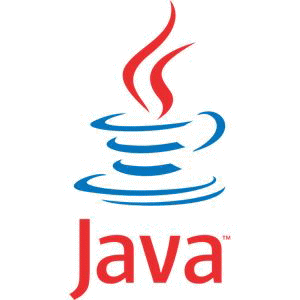
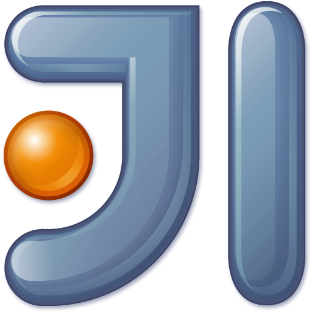
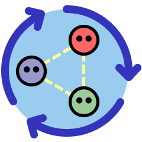

Rapport de Stage Année Universitaire 2012/2013
Implémentation de la Linked Data platform (RDF, WebID) dans le backend Scala de l'application web Stample
Formation : Master Web Intelligence
Université : Université de Jean Monnet Saint-Etienne
Par : Moncef BEN RAJEB
Ecadreurs de Stage
Tuteur de stage : Henry STORY
Tuteur pédagogique : Professeur Pierre MARET
Remerciement
Avant de vous décrire ce que j'ai appris durant de ma première expérience au milieu professionnel, il me semble opportun de commencer par des remerciements, à ceux qui m'ont appris durant ces trois premier mois de stage et à la famille Story de cet accueil chaleureux durant cette période.
Je tiens également à exprimer mes vifs remerciements à mon encadreur de stage Mr.Henry Story pour l'aide déterminante qu'il ma accordée, pour l'intérêt qu'il a porté à mon travail et mon apprentissage, et pour m’avoir accompagné tout au long de cette expérience avec beaucoup de patience et de pédagogie.
Je remercie aussi l’ensemble des personnes au labo d'édition et l'équipe Stample avec lesquelles j'ai travaillé, pour leur soutien et leurs conseils aussi bien dans la partie implémentation que dans la rédaction de ce rapport.
Je remercie particulierement Mr. Pierre Maret, mon tuteur de stage pédagogique, d'avoir su m'orienter et m'aiguiller à travailler avec Stample et de son soutien tout au long de cette expérience.
Enfin, je remercie tous les professeurs de l'université de Jean Monnet, et toute presonne qui s'interesse au contenu de ma page web.
Introduction
Au cours de ma première année de master Web Intelligence à l'université de Jean Monnét Saint Etienne, nous devrions effectuer un stage d'une durée minimale de trois mois à compter de 18 mars.
Tout au long de mon stage, j'ai été amené grâce à Monsieur Pierre Maret à travailler avec une Startup Stample pour écrire une version décentralisée avec les nouvelles téchnologies du web sémantique et le langage de programmation fonctionnelle orienté object Scala afin de mettre en oeuvre une solution mondiale au probléme de centralisation.
Ce stage a été une bonne opportunité pour moi d'apprendre Scala, PlayFrameWork et de voir en proche la vie profesionnelle avec une Startup qui est notament differente d'une entreprise ainsi que d'apprendre la philosophie du web et de travailler avec un groupe très ambitieux.
J'ai décidé d'écrire mon rapport en HTML5 et de le mettre en ligne comme projet public open source afin d'interagir avec ce rapport comme étant un projet open source puis l'héberger sur un serveur pour avoir une visibilité plus grande de ce que j'ai appris et aider les autres à apprendre plus vite permettant ainsi à mes professeurs, mes collegues et mes amis de naviguer facilement pour voir le contenu du rapport et profiter de mes indexs disponibles en ligne et me contacter pour des interrogations et ils peuvent accèder au source disponible sur mon compte GuitHub pour modifier ou me proposer des suggestions. Je recommande cette méthode à tout informaticien qui veux montrer ces talents en programmmant aussi le rapport du Stage.
Ce travail permet d'apporter une réponse au problème de centralisation des données évoqué par Romain Blin lors de sa thése de premiere année de master, mon tuteur de stage Henry Story spécialiste du web sémantique et qui fais partie maintenant de Stample (Diercteur technique) a décidé de mettre en place ces cinqs années de recherche sur le web sémantique et le Linked Data pour Stample.
Il apparait cohérent de commencer mon rapport de stage par une présentation de Stample ensuite de mettre en place tous les concepts de programmation fonctionnelle et orientée objet Scala qui m'a pris une bonne période pour les apprendre ainsi que les autres outils puis de décrire la solution actuelle centralisée de Stample, décortiquer les différentes fonctionnalités, analyser les problémes, et décrire l'intégration de secureSocial pour Stample.
Présentation de Stample
Brève description
Stample, première plateforme de réseau social distribué et sécurisé, redonne à chacun le contrôle exclusif de ses informations et améliore l'ergonomie de l'apprentissage, du travail individuel et de la collaboration.
Stample en quelques mots :
Sample, attraper facilement du contenu du web avec notre puissant bookmarklet.
Drag & drop des fichiers depuis votre ordinateur, créer des notes et articles de n'importe quel appareil.Staple, Gracieusement organiser votre bibliothèque de contenu personnel grace à notre architecture d'arborescence similaire à un système de fichier.
Options visuelles conçues avec soin des informations dont vous avez besoin et accessible en un coup d'œil.Stamp, résumer, mettre en évidence et d'annoter tous vos contenus.
Partager parfaitement du contenu et des métadonnées(des cathégories) avec certains membres de votre réseau.Architecture Conceptuelle actuelle de Stample
L'idée de stample conçue au départ par Edward et Sacha malgré l'innovation qu'elle apporte reste toujours une application web2, l'arrivée d'Henry(directeur technique) avec ces idées de décentralisation de ce réseau social et passer à un stample Web3 permet non seulement d'avoir un stample unique mais aussi un stample révolutionnaire, Scalable et d'utiliser le protocole d'authentification webID (standard du w3c).
Etat de l'art
La plateforme Stample est développée en Scala, Json, HTML5 et CSS3, sur le Framework Play et avec MongoDB NoSQL database.
Durant ma premiére partie de Stage j'ai subi une formation en Scala commençant par le livre de Odersky Programming in Scala puis en faisant les exercices sur coursera en découvrant le Framework Play avec des petites applications.
L'apprentissage de Scala ma pris une bonne durée vu que je n'avais pas assez de connaissances sur les languages de programmation fonctionnelle et la pensée imperative dont je me suis habitué.
La centralisation des données qui s'oppose au principe du web comme Tim Berners-Lee l'explique dans son article au w3c est un problème réel. Le web réprésente une source d'informations prépondérante mais malheureusement cette mine est mal exploité par des réseaux sociaux dont le plus fameux jusqu'à maintenant FaceBook s'opposant au principe du web et provoquant un danger qui s'empire dans le temps.
Constat de départ
A l'ère de l'économie de la connaissance, de l'omniprésence des données, de leur circulation permanente sur l'internet, et en l'absence de mécanismes efficaces de restriction de leurs usages, nos informations personnelles, nos travaux, et de plus en plus de données nous concernant, sont captées, détournées et exploitées sans qu'aucun contrôle ne soit possible. Les enjeux critiques des individus, entreprises, institutions et états:
- Permettre à chaque partie prenante de reprendre le contrôle de leurs informations,
- Favoriser l'union et la coordination des intelligences autour d'objectifs communs.
Probléme
Il ya un besoin croissant d'un outil de partage sécurisé des connaissances numérique. Les gens perdent des heures chaque semaine en raison de la complexité croissante de leur vie numérique:
- Filtrage des e-mails et notifications non désirés,
- Créations et mises à jour de leurs profils sur de trop nombreux services isolés les uns des autres ,
- Récupération de mots de passe perdus ou volés ...
Et les choses empirent:
- L'information pertinente est de plus en plus difficile à extraire du déluge de données,
- La grande segmentation des outils rend l'organisation et la collaboration frustrante.
- Les modèles actuels de stockage centralisé de données posent de sérieux problèmes de confidentialité et de respect de la vie privée.
Solution
Stample propose une solution simple pour :
- Reprendre le contrôle de vos données personnelles, décider avec qui et comment elles peuvent être partagées,
- Améliorer l'ergonomie de l'apprentissage et du travail par la contextualisation avancée de l'information,
- Gérer son identité de façon autonome sur le Web social distribué,
- Collaborer avec son réseau de confiance en toute sécurité, sans centralisation, ni accès d'une tierce partie.
Concurrence
- Protocoles d'identification (Alternatives à WebID ): OpenID, OAUth, Infocard...
- Gestion de l'accès et de l'identité: CA Technologies, Ping identity, SailPoint, Garlik (owned by Experian)...
- Stockage en ligne: Dropbox, Box, Google Drive...
- Réseaux sociaux: Facebook, Tumblr, Pinterest, Instagram...
- Aggrégateurs et plateformes de blogs: WordPress, Twitter, Reddit, Scoop.it, Paper.li, Flipboard, Zite, Jolicloud...
- Réseaux sociaux professionnels: LinkedIn, Quora, Yammer, Podio...
- Outils de note et d'organisation d'informations: Evernote, SpringPad, Clipboard, Pearltrees, Kippt, Google Keep..
- Outils de partage des connaissances: Mendeley, Kno, Scribd, SlideShare, Issuu...
Avantage competitif
La concurrence sur l'Internet, et en particulier dans le domaine des réseaux sociaux est féroce, un très grand nombre d'acteurs se bat sur un périmètre de marché très resseré. Comme l'a expliqué Renee Mauborgne dans «Blue Ocean Strategy», la seule façon de sortir gagnant d'un marché hautement concurrentiel comme celui-ci est de changer les règles du jeu, de créer un marché qui n'existait pas auparavant. Stample ouvre l'océan bleu du Web social sécurisé et distribué (réparti). Stample vise à établir sa réputation et son leadership dans ce domaine par le passage à une architecture respectueuse de la vie privée et de la confidentialité, les aidant à collaborer efficacement sans duplication.
Strategie
Imposer la plateforme technique open source comme la référence
Le caractère open source du coeur applicatif de Stample est un élément central de notre stratégie. Il nous permet de nous prémunir contre des attaques en droit de la propriété intellectuelle par les géants du secteur et de bénéficier du soutien d'un communauté de développeur extrémement productive. Notre leadeship sur ce nouveau marché immense résultera de notre capacité à imposer le rythme des mises à jour de notre plateforme ouverte, et à maintenir notre avance dans la maîtrise des technologies mises en oeuvre.
Offrir une une application de qualification de l'information et l'expérience utilisateur la plus homogène
Stample est conçu pour s'adapter aux gestes et aux usages quotidiens des gens. Nos utilisateurs pourront chacun construire leur réseau de connaissances personnelles, en évaluant leurs sources et les contenus qu'ils partagent.
Nous allons utiliser la mécanique du jeu pour encourager les gens à partager des informations hautement qualifiées et contextualisées.Modele Economique
Stample est distribué sous deux formes impliquant deux modèles d'affaires distincts:
- Une version de base logiciel libre (open source) que chacun peut installer de façon autonome sur les serveurs de son choix; dont la monétisation résulte de la fourniture de support, garantie et de services spécifiques.
- Un Service cloud à la carte (en mode SaaS (logiciel en tant que service)); dont la monétisation résulte d'abonnements et de commissions sur la vente d'options.
Hands On Scala
Introduction historique
Pour voir le contexte de Scala on commance par une petite introduction historique
- 1996 : Sun Microsystems realise JAVA 1.0 conçu par James Gosling
- 1997 : Martin Odersky et Philip Wadler publier la spécification du langage Pizza à PoOL (Principles of Programming Language).
Pizza est un superset de Java, et se traduit par des sources Java comme une représentation intermédiaire.
Features parametric polymorphism (a.k.a. "generics"), algebraic types (a.k.a. "case classes") et higher-order functions.- 1998 : Bracha, Odersky, Stoutamire and Wadler publie GJ à OOPSLA.
GJ adopte génériques de Pizza, supprime case classes et higher-order functions
Compile directement à bytecode JVM, éliminant traduction source Java.- 2000 Sun Microsystems adopte le compilateur GJ Odersky's comme javac in JDK 1.3
- 2004 Sun Microsystems Java versions 1.5, intégrant des génériques de GJ
En attendant...
- Milieu des années 1980 : Beaucoup de langages fonctionnels dans la recherche, les dérivés de Scheme, ML et Miranda.
Caractéristiques du langage explorés, y compris l'inférence de type, l'évaluation paresseuse et types de rang supérieur- 1987-1999 : developpement de HasKell
- 1999-2001 : Odersky developpe Funnel language
Histoire Moderne
Nom : Scala vient de " Scalable langage"
Auteur : Martin Odersky
Date de Création : 2003
Lieu : EPFL Ecole polytechnique fédérale de lausanne
But : étre élégant, concis, et d'étre type-safe...
Dernier version : Scala 2.10.1 mars 2013
Dans la communauté : SF Scala (San Francisco), Paris scala user groupe
Introduction générale
On prend le langage JAVA, c'est certainement le meilleur langage, la meilleure plateforme et la communauté la plus importante pour l'industrie.
Java a remporté plusieurs victoires : le débat du « write once/run everywhere », la gestion de la mémoire, une plateforme d'entreprise, un écosystème open-source énorme. Il est enseigné dans les universités et les écoles d'ingénieurs.
Mais si Java est votre seule langue maternelle, je pense qu'il est temps d'apprendre d'autres langages.
Scala par exemple est très intéressant. La communauté, les outils, les livres et l'énergie qui anime ce langage méritent que l'on s'y intéresse.
Scala est un langage mature qui tourne sur la JVM. Il propose une approche différente pour résoudre nos problèmes. La majorité des développeurs moi y comprie n'ont pas eu de formation en programmation fonctionnelle.
Il y a tellement de concepts intéressants, une approche si complémentaire, qu'il est vraiment dommage de ne pas s'y mettre. J'y suis jusqu'au cou en ce moment, je nage de grandes longueurs dans un univers que j'utilise depuis mon premier jour de stage et puis : Play! Framework aussi avec Scala.
J'encourage les développeurs de base à découvrir ce langage en commençant par prendre un outil, puis en écrivant une vraie application de la vraie vie.
Apprendre Scala peut prendre aussi de temps que vous pouvez prévoir si vous êtes pas habituer avec la programmation fonctionelle mais il vous apportera beaucoup.
Un langage Scalable/Adaptable
Description
Le nom Scala vient du besoin d'un langage Scalable multi-paradigme, son design lui permet de grandir avec la demande des utilisateurs.
Scala nous permet avec un petit script de construire des grandes systems. C'est facile de travailler avec scala car il tourne sur la machine virtuelle java et il interagit parfaitement avec toues les bibliothèques de java. Techniquement, Scala est un mélange de concepts de programmation orientée objet et fonctionnelle dans un langage typé statiquement. La fusion de la programmation orientée objet et fonctionnelle se manifeste dans de nombreux aspects de la Scala, il est probablement plus répandue que dans toute autre langue largement utilisée. Les deux styles de programmation ont des forces complémentaires quand il s'agit de l'évolutivité. Constructions de programmation fonctionnels de Scala, il est facile de construire des choses intéressantes rapidement à partir de pièces simples. Ses constructions orientées objet, il est facile de structurer les grands systèmes et à les adapter aux nouvelles exigences. La combinaison des deux styles de Scala permet d'exprimer de nouveaux types de modèles de programmation et d'abstractions qui la composent. Elle conduit également à un lisibles et style de programmation concise. Et parce qu'il est tellement malléable, la programmation en Scala peut étre beaucoup de plaisir.Les outils
- The Interactive Interpreter : Read-Evaluate-Print Loop (REPL)
- Simple Build Tool (sbt)
- IDE : Eclipse/IntelliJ... avec plugin Scala
- Scala doc
Apprentissage des concepts COURSEA
Principes de la programmation fonctionnelle en scala
Sur le site des cours en ligne coursera vous trouverez une trés bonne introduction sur la programmation fonctionnelle Scala assurer par Martin Odersky, qui n'est moins que l'inventeur du langage Scala. Le site avec un nombres aussi important d'inscrits, a rencontré un bon succés, révélateur de l'émulation de ce langage.
J'ai suivi ce cours de 7 semaines dont je suis très satisfait deux parties un cours théorique en video et des exercices partant toujours sur le contenu du cours ainsi que des interrogations au cours durant le cours théorique. Les vidéos des cours sont en anglais et relativement simples à comprendre en outre le professeur est un excellent pédagologue. les exercices permettent de plus en plus d'apprendre le raisonnement fonctionnel. Et un systéme de notation quasi temps réel premet d'avoir un feedback rapide sur le travail. Vous trouvez sur le site les détailles du cours ainsi que les exercices et des aides guide pour chaque exercice de l'Assignments.Mes Remarques, mes attentions dans ces cours et ce que j'ai retenu
- Week 1 : Fonctions et Evaluation : Dans cette semaine on a vu la possibilité de choisir entre le call by name pour evoluer la fonction en premier lieu ensuite les arguments si besion et call by value evoluer les arguments avant d'appeler la fonction.
Hint : en java il y a que le call by value- Week 2 : Les fonctions d'ordre supérieur : Des fonctions qui prennent en paramétre d'autres fonctions et qui retourne aussi des fonctions, la notion fondamentale de la récursivité terminale dont scala se base et l'astuce de l'accumulateur.
- Week 3 : Données et abstraction : La hiérarchie des objets est : Any, AnyRef et AnyVal en Scala tout est un object(pas de type primitif comme Java int,char...)
Exercice disponible sur mon compte GitHub week3- Week 4 : Type & Pattern matching : Encodage Huffman binary tree: Les fonctions sont des objets avec une méthode apply les deux formes de plymorphismes subType&generics les types paramétres s'écrivents Class[T] au lieu de Class <T> en Java La variance etant donnée que A :< B si C[A] :< C[B] C est Covariant un objet immutable peut étre covariant. Le pattern matching notion très importante en Scala
Disponible sur mon GitHub week4- Week 5 : Les Lists : La concatenation xs ++ ys est équivalante à (xs foldRight ys)(_::_)
- Week 6 : Les Collections : flatten est équivalante à foldRight(_++_) xs flatMap fct est équivalant à (xs map fct).flatten l'API est très riche on peut calculer le produit scalaire en une seul ligne for((x,y)<- xs zip ys )yield (x*y)).sum le for est un sucre syntaxique (syntactic sugar) pour les méthodes Map flatMap et filter for(x<- e1) yield e2 <=> e1.map(x=>e2) for(x<- e1 if fct) yield e2 <=> for(x<- e1.filter(x=>fct))yield e2 for(x<-e1;y<-e2) yield e3 <=> e1.flatMap(x=>for(y<-e2))yield e3
Disponible sur mon compte GitHub week6- Week 7 : Lazy evaluation (l'evolution paresseuse) : streams, lazy val...
Disponible sur week7Ce cours ma permet clairement d'apprendre les notions de base de ce langage ma permis de programmer fonctionellement et scalablement , je recommande ce cours comme premier pas en scala vers la fin de ce cours si vous avez bien fait les exercices durant les sept semaines vous aurez un certificat note X/80 :). Il reste cependant pleins de sujet à creuser :Les monads, akka, les Futures...
Il y'a aussi une serie d'exercice sur metanote mon compte GitHub proposer par paris scala user group que je vous invite à les faires.
À propos de coursera
Une fois que toutes les outils sont bien installés sur votre machine, chaque semaine vous aurez des cours et des exercices. La resolution des exercices nécessite après les tests qui sont écrites pour chaque série. cela pour voir si notre solution répond bien au besoin puis nous pouvons faire un submit pour avoir la note sur 10 de l'exercice comme ci-dessous
> submit monmail@Email.domaine monPWDdeSoumission [info] Packaging /Users/Moncef/Programming/Odersky/forcomp/target/scala-2.10/progfun-forcomp_2.10-1.0.0.jar ... [info] Done packaging. [info] Connecting to coursera. Obtaining challenge... [info] Computing challenge response... [info] Submitting solution... [success] Your code was successfully submitted: Your submission has been accepted and will be graded shortly. [success] Total time: 6 s, completed 1 mai 2013 12:08:53
Généralités
Scala
- Langage mélangeant la programmation Orienté Objet et Fonctionnelle
- Tourne sur la JVM
- Compatible avec les libreries JAVA
- Statiquement typé
- Soucis de la concurrence (Immutable)
- Inférence de type
- Tout est Objet (hiérarchie des classes)
Premier Exemple
Comme premier exemple, nous allons écrire le très classique HelloWorld. Guère passionnant mais cela nous permettra de nous familiariser avec les outils de Scala sans trop dépendre des spécificités du langage. Voici le très fameux HelloWorld:
object HelloWorld { def main(args: Array[String]) { println("Hello, world!") } }La structure du programme ne devrait pas déconcerter les développeurs Java. On découvre une méthode *main* qui récupère les arguments en ligne de commande sous forme d'un tableau de chaînes de caractères comme paramètre. Le corps de la méthode consiste en un simple appel à la méthode prédéfinie *println* avec en paramètre, le fameux message. La méthode *main* ne retourne rien (c'est une procédure). C'est pourquoi il n'y a aucune déclaration de type de retour. La nouveauté pour les développeurs Java est la déclaration **object** qui contient la méthode main. En fait, il s'agit ni plus ni moins qu'une déclaration de singleton, c'est à dire une classe avec une unique instance. Cette déclaration indique la définition d'une classe et d'une unique instance, qui sera créée lors de sa première utilisation. Le lecteur attentif aura noté que la méthode main n'est pas déclarée comme *statique* avec le mot clef *static*. Ce mot clef n'existe pas en Scala (ni pour les méthodes ni pour les champs). Le développeur Scala utilisera donc les singletons en lieu et place de static.
Compilation de l'exemple
Pour compiler l'exemple, nous utilisons *scalac*, le compilateur scala. *scalac* fonctionne comme de nombreux compilateurs : il prend comme argument un fichier source, avec souvent des options et produit un ou plusieurs fichiers binaires. Les binaires produits sont en fait des fichiers standards en bytecode Java, les *.class* . Après avoir sauvegardé le programme précédent dans le fichier HelloWorld.scala, nous pouvons le compiler avec la commande suivante (le symbole '>' représente le prompt):
$ scalac HelloWorld.scala
Ceci va générer quelques fichiers class dans le répertoire courant, dont l'un d'entre eux s'appelle **HelloWorld.class**, et contient une classe qui peut étre directement exécutée en utilisant la commande scala comme le montre la section précédente.
Faire fonctionner l'exemple
Une fois compilé, un programme Scala peut étre exécuté avec la commande *scala*. Son usage est semblable à la commande java et accepte les mémes options. L'exemple précédent peut étre exécuté en utilisant la commande suivante qui produit le résultat attendu :
$ scala -classpath . HelloWorld
Hello, world!
Présentations des concepts
Les Méthodes
La méthode Map
permet d'appliquer une fonction sur tout les éléments d'une liste
Exemple
scala> val list=List(4,5,6) list: List[Int] = List(4, 5, 6) scala> list map (_*2) res1: List[Int] = List(8, 10, 12)On peut écrire cet exemple autrement
scala> for(l<-list)yield(l*2) res2: List[Int] = List(8, 10, 12)La méthode flatten
scala> List(List('A','B'),List('C','D'),List('E','F')).flatten res3: List[Char] = List(A, B, C, D, E, F)La méthode flatMap
permet de combiner les deux méthodes précédentes
scala> List(1, 2, 3).flatMap(i => ((1 to i).toList)) res4: List[Int] = List(1, 1, 2, 1, 2, 3)plus de détaille
scala> List(1, 2, 3).map(i => (1 to i).toList) res5: List[List[Int]] = List(List(1), List(1, 2), List(1, 2, 3))
scala> res1.flatten res6: List[Int] = List(1, 1, 2, 1, 2, 3)
Scala VS Java
En SCALA
class Person(CIN: Int, name:Int)
//un constructeur implicite associer à chaque class méthode applyPerson p=new Person(1223,"TOTO")
En JAVA
class Person{
private int CIN ;
private String name;
public Person(int CIN,String name){
this.CIN=CIN ;
this.name=name ;
}
}
// class person avec un constructeur Exemple d'instantiation d'une classe (Person)
case class Person(CIN:Int,name:String)
Trois écritures équivalantesLes Getters / Setters en Scala
- val p1=new Person(123,"toto")
- val p2=Person(124,"zaza")
- val p3=Person.apply(125,"titi")
- Ils sont générés pour la JVM
- On peut les surcharger
- Ils sont privés si l'attribut est privé
- Il est possible d'empécher leurs génération => private[this] name: String
Hint :C'est vrai quand on s'habitut avec la programmation Scala en trouve que notre code java est très long, c'est magique ce langage de programmation haut niveau ;)
Programmation fonctionnelle
- Exprimer les fonctions au sens mathématique
- Eliminer les effets de bords
- S'oppose à la programmation impérative
Higher order functions
C'est des fonctions qui prennent en paramétre d'autres fonction ou dans le resultat est une fonctionExemple : une fonction apply qui prend une fonction f et une valeur v et applique la fonction f à v def apply(f: Int => String, v: Int) = f(v) object Test { def main(args: Array[String]) { println ("Apply method : " + apply("Zara", "gmail.com")); println ("Unappy method : " + unapply("Zara@gmail.com")); println ("Unappy method : " + unapply("Zara Ali")); } // The injection method (optional) def apply(user: String, domain: String) = { user +"@"+ domain } // The extraction method (mandatory) def unapply(str: String): Option[(String, String)] = { val parts = str split "@" if (parts.length == 2){ Some(parts(0), parts(1)) }else{ None } } }Présentation des concepts clés
Scala classes hiérarchie
Tout est Objet
- Any Supertype de tous les types
- AnyVal Supertype de tous les types de valeur
- AnyRefSupertype de tous les types référence, équivalant à java.lang.Object
- Supertype de tous les types référence, seulement une instance: null
- Nothing Supertype de tous les types, non instances
- Unit Equivalant à Java Void, seulement une instance:()
Les classes definition
- Définition standard
- Pas de mot clé Public
- Un fichier source contient plusieurs classes et par défaut elles sont toutes public
Les cases classes Definition
Un glissement progressive vers des cases classes
- Les objets sont non modifiable après l'instanciation
- Les méthode hashcode,equals,toString... implicitées
- Pas de new
- Décomposer avec le Pattern Matching
Une Classe à part entière
- Expression des termes
- Décoposition des structures
- Pretection du design
- Export les paramétres du constructeur
- Manipuler par le pattern matching
- Consultation simplifiée sans new explicite
Val/Var
* val : -déclaration d'un attribut variable non modifiable en scala généralement en utilise des vals
-déclaration de parametre de classe : getter implicite
* var : -déclaration d'un attribut variable modifiable
-déclaration de parametre de classe : getter and setter implicitetype
En Scala on peut déclarer des types avec le mot type
exemple type word :String
type sentence :List[word]Les Traits
C'est comme les interfaces en Java sauf qu'on peut implimenter les méthodes ; déclaration similaire a une classe avec la possibilité de l'héritage multiple et pas de parametre de classe si non une erreur de compilation
trait ImageInfo{ val image: Image def ImageInfo :String = image.name } trait ComputeAvgScore trait AnotherOne class Image extends ImageInfo with ComuteAvgScore with AnotherOne{ val name="Sacha" }==>Le mot-clé sealed devant un trait facilite le pattern matching,un sealed trait peut être prolonger que dans le même fichier que sa déclaration
Les collections
- Utilise le trait Iterable
- Immutable par défaut
- Fonctions d'ordre supérieur : filter, map, flatMap ...
- Exemples de collection :Set,List,Map,Vector...
Les Lists
La classe List repose sur deux cases classy::ys => represente une list dans le head est y (premier element de la list),suivi du tail ys le reste de la list (head,tail) sont deux fonctions et isEmpty une fonction qui renvoie true si la list est vide false dans le cas contraire.
- Nil qui represente une list vide
- :: (cons)
Des fonctions de plus haut niveau exemple : x:Int => x+1 est équivalent à f(x:Int)={x+1}Exemple de fonctions : map, flatmap, flatten ...Les Options
Les Options sont aussi des collections le type Option désigne une valeur Optionnelle
Option[A] : ->Some[A] ->NoneL'intérét de l'optionImaginons qu'on cherche une personne dans un graphe RDF def findImage(CIN :Int)=Option[Image] =>On peut avoir comme résultat un None ou bien un Some de quelques choses.Le pattern matching
une notion très improtante dans Scala peut étre assimilé au switch case en Javav match{case p1=>v1 ... pn=>vn} pi représente les patterns et vi la valeur renvoyée dans le cas ou le pi match v Erreur de matching est renvoyée si on a besoin Exemple : def anyThing(x:Any) = x match{ case 5 =>"Int" case true=>"Boolean" case "hello"=>"String" case Nil => "Empty List" case _ => "Something else" }Syntaxe réduit et efficase
Vous trouvez ci-dessous un exemple de fonction produit scalaire ecrite en Scala
def produitScalaire(xs:Vector[Double],ys:Vector[Double]):Double={ (xs zip ys).map(xy=>xy._1*xy._2).sum } //> produitScalaire: (xs: Vector[Double], ys: Vector[Double])Double produitScalaire(Vector(1,3,4),Vector(2,2,2)) //> res8: Double = 16.0 //With pattern matching def produitScalaire2(xs:Vector[Double],ys:Vector[Double]):Double={ (xs zip ys).map{case(x,y)=>x*y}.sum } //> produitScalaire2: (xs: Vector[Double], ys: Vector[Double])Double produitScalaire2(Vector(1,3,4),Vector(2,2,2)) //> res9: Double = 16.0 //produit scalaire version avec for def produitScalaireFor(xs:List[Double],ys:List[Double]):Double= (for((x,y) <- xs zip ys )yield (x*y)).sum //> produitScalaireFor: (xs: List[Double], ys: List[Double])Double produitScalaireFor(List(1,3,4),List(2,2,2)) //> res8: Double = 16.0 Exemple Generer des pairs
Avec map vecteur de vecteurs val n=7 //> n : Int = 7 ((1 until n) map (i=> (1 until i) map (j =>(i,j)))) //> res11: scala.collection.immutable.IndexedSeq[scala.collection.immutable.Ind //| exedSeq[(Int, Int)]] = Vector(Vector(), Vector((2,1)), Vector((3,1), (3,2)) //| , Vector((4,1), (4,2), (4,3)), Vector((5,1), (5,2), (5,3), (5,4)), Vector(( //| 6,1), (6,2), (6,3), (6,4), (6,5))) En applique flatten pour avoir un seul vecteur des pairs ((1 until n) map (i=> (1 until i) map (j =>(i,j)))).flatten //> res11: scala.collection.immutable.IndexedSeq[(Int, Int)] = Vector((2,1), (3 //| ,1), (3,2), (4,1), (4,2), (4,3), (5,1), (5,2), (5,3), (5,4), (6,1), (6,2), //| (6,3), (6,4), (6,5)) La méme chose en applique un flatMap au lieu de map flatten ((1 until n) flatMap (i=>(1 until i) map (j =>(i,j)))) //> res11: scala.collection.immutable.IndexedSeq[(Int, Int)] = Vector((2,1), (3 //| ,1), (3,2), (4,1), (4,2), (4,3), (5,1), (5,2), (5,3), (5,4), (6,1), (6,2), //| (6,3), (6,4), (6,5)) On applique un filtre pour avoir que les pairs des nombres premiers : def isPrime(x:Int):Boolean= (2 until x) forall (p=>x%p!=0) //> isPrime: (x: Int)Boolean ((1 until n) flatMap (i=> (1 until i) map (j =>(i,j)))) filter(pair=> isPrime(pair._1+pair._2)) //> res11: scala.collection.immutable.IndexedSeq[(Int, Int)] = Vector((2,1), (3,2), (4,1), (4,3), (5,2), (6,1), (6,5)) For Loop expression case class Person(nom :String,age:Int) pour avoir les personnes qui ont plus que 20 ans for (p <- persons if p.age>20 )yield(p.nom) equivalant à persons filter(p=>p.age>20)map(p=>p.nom)Hint : L'expression for est similaire à Loop dans les langages iterative sauf qu'elle construit une list de resultats de tout les Iterators For expression dans scala produit toujours un nouveau résultat les deux expressions sont equivalantes mais la premiere elle est plus facile a lire.
About case class
Case classes can be pattern matched,
Case classes automatically define hashcode and equals,
Case classes automatically define getter methods for the constructor arguments.About variance
les caractère + [+T] signifie que la flexibilité des paramètres d'entrées List[+A] le + devant le paramètre A veut dire que pour tout type X et Y si X est sous-type de Y =>List[X] est un sous-type de List[Y] les listes sont immutable mais nous n'avons pas besoin de copier le contenu de la liste on peut le réutiliser => propriété de data sharing on dit que data functional est persistent c'est a dire que les references ne change plus avec les opérations sur les données eq pour les references des objets x eq y == pour l'égalite des valeurs x ==y trait Function[-T,+U] T contravariant U covariant Il y a deux principal forme de polymorphisme : -Subtyping -genericsType Bound
upper bound [S <: IntSet] veut dire que S peut étre instantiated seulement du types qui conforme avec IntSet
S <: T: S est un soustype de T
S >: T : S est un super type de T
Les Monades
Dans la programmation fonctionnelle Il y'a un concept générique appelé monad, ce qui peut expliquer un grand nombre de types avec Computa-tions, allant de collections, à des calculs avec l'Etat et I / O, les calculs de retour de suivi, et les opérations, pour n'en nommer que quelques-uns. Vous pouvez formuler des fonctions, flatMap et withFilter sur une monade.
En outre, vous pouvez caractériser chaque monad par map, flatMap et withFilter plus un constructeur de type "unit" qui produit une monade d'une valeur d'élément.Des détailles
The striMargin avec un pipe au début de la phrase on peut faire des /n similaire au prog Java => 0 until 10 == Range(0,10) == 0 to 9 deux écritures équivalentes . Dans scala les constructeur n'ont pas une définition concrète une définition implicite de upplay and unapply. Sealed class ne peut pas avoir un nouveau sous class que celui dans le méme fichier. Un langage purement orienter objet c'est a dire chaque valeur est un objet. Si le langage est basé sur les classes => le type de chaque valeur est une classe if (cond) te else ee cond.ifThenElse(te,ee) List (immutable) covariant /Array(mutable) non covariant Scala ne vous permet pas de programmer imperativement mais quand vous serez plus confortable avec Scala vous aimerez la façon fonctionnelle de programmation ce style de programmation est plus efficace. Par exemple une façon plus concis d'écrire la boucle for pour imprimer des agruments : val args=List("aa","bb","cc") args.foreach(arg => println(arg)) Une autre façon de l'ecrire plus abstract mais plus élégonte args.foreach(println) Résultat: aa bb cc Une façon d'ecriture du boucle for : for(i<-1 to 3) println("iteration "+i) Résultat : iteration 1 iteration 2 iteration 3Scala au milieu professionnel
Il y a plusieurs compagnie qui ont fait une migration sur Scala parmis ces compagnies :
Livres de Scala
- Programming in Scala
- Scala for the impatient
- scala in depth
- Programming Scala


Outils de développements
Les IDEs
 IntelliJ IDEA est un IDE Java commercial développé par JetBrains. Il est fréquemment appelé par le simple nom «IntelliJ».
IntelliJ est un bon IDE dont j'ai travaillé pour faire le site du rapport en HTML5
Eclipse est un projet, décliné et organisé en un ensemble de sous-projets de développements logiciels, de la Fondation Eclipse visant à développer un environnement de production de logiciels libres qui soit extensible, universel et polyvalent.
J'ai utilisé Eclipse avec le plagin de scala pour faire les exercices de Odersky ainsi que pour travailler sur le projet Stample
GitHub
Pourquoi Git ?Si vous étes dans cette partie, je suppose que vous étes tout nouveau à Git et GitHub. Cette partie vous aidera à travers les bases et d'expliquer pour quoi c'est utile et vous trouverez à la fin un lien vers les fonctionnalitées.
At some point you may find yourself wanting to contribute to someone else's project, or would like to use someone's project as the starting point for your own. This is known as "forking." Git help
Si vous avez déjà travaillé sur un projet informatique, que ce soit un petit projet personnel ou un plus gros projet professionnel, vous avez certainement déjà rencontré un de ces problèmes :
Si ces problèmes-là vous parlent, vous auriez dà» utiliser un logiciel de gestion de versions. Ce type de logiciel est devenu indispensable lorsqu'on travaille à plusieurs sur un méme projet et donc sur le méme code source. Méme si vous travaillez seuls, vous aurez intérét à commencer à en utiliser un rapidement car il vous offrira de nombreux avantages, comme la conservation d'un historique de chaque modification des fichiers par exemple.
- « Qui a modifié le fichier X, il marchait bien avant et maintenant il provoque des bugs ! » ;
- « Robert, tu peux m'aider en travaillant sur le fichier X pendant que je travaille sur le fichier Y ? Attention à ne pas toucher au fichier Y car si on travaille dessus en méme temps je risque d'écraser tes modifications ! » ;
- « Qui a ajouté cette ligne de code dans ce fichier ? Elle ne sert à rien ! » ;
- « à quoi servent ces nouveaux fichiers et qui les a ajoutés au code du projet ? » ;
- « Quelles modifications avions-nous faites pour résoudre le bug de la page qui se ferme toute seule ? »
Vous voyez il y'a plusieurs raisons pour lesquelles j'ai décidé d'écrire mon rapport de stage en html5 ;)GitHub c'est un site qui vous permet d'héberger vos projets avec git et qui vous permet de gérer d'une manier visuelle les collaborateurs et les modifications le principale interret de ce site qu'il est gratuit pour les projets open source et méme pour les projet privé il est relativement intéressant au niveau tarif c'est aussi bas. [Site de Zéro]
Hint :Il existe de nombreux logiciels de gestion de versions, comme SVN (Subversion), Mercurial et Git. Je vous présente Git (prononcez « guite ») qui est un des plus puissants logiciels de ce genre. Nous l'utilisons notamment pour gérer le code source du Stample ! Git Book
REST
REST (REpresentational State Transfer) est un style d’architecture permettant de construire des applications distribuées basées sur HTTP 1.0. Le terme REST a été inventé par Roy Thomas Fielding en 2000 dans le chapitre 5 de sa thèse de doctorat. REST a déjà été utilisé dans beaucoup d’applications web telles que le réseau social Twitter et que nous l'utlisons aussi pou Stample. La consultation des données par le biais de son API se fait par un modèle d’architecture REST.
REST n’est pas un protocole (tel que HTTP) ou un format. Ce style d'architecture est particulièrement bien adapté au World Wide Web mais n'est pas dépendant du Web.
PlayFramework
Play c'est un FrameWork high-productivity Scala Java web application qui intègre les composantes et l'API dont vous avez besion pour le développement moderne de l'application web.
Play est basé sur un architecture légère, Web convivial et dispose consommation de ressources prévisibles et minimes (CPU, mémoire, threads) pour les applications hautement évolutives grâce à son modèle réactif, basé sur Iteratee IO.
Il suffit de suivre les démarches pour télècharger et changer le path pour tavailler avec PlayFramework
Play! Framework embarque toutes les briques nécessaires au support d'une application web moderne et modulaire. Il nous permet enfin de faire concorder nos méthodes de développement avec ce qui fait le web : le protocole HTTP, l'approche REST (Representational State Transfer) ainsi que la consommation et la production des formats que consomment nativement les navigateurs (HTML, CSS, JavaScript, JSON...) Play adopte pleinement les principes de l'architecture REST :
Il sépare la gestion de l'interface et la gestion des données grâce au support de l'approche MVC (Model-View-Controller) et à la prise en charge de la compilation des assets exploités dans le navigateur pour exploiter celui-ci comme une plateforme de développement. Il ne conserve pas d'état entre les requétes (stateless) ce qui évite les mauvaises pratiques de gestion de session auxquelles nous faisons face depuis le début du web (remplissage de mémoire, perte de session intempestive au bout d'un temps sans utilisation). Une fois de plus, le navigateur est mis à contribution en exploitant ses capacités de stockage locales. Les ressources de l'application sont identifiées de manière unique et prédéfinies grâce au système de gestion de routes, ce qui favorise la propension naturelle de ces requétes à étre cachées par le navigateur et par les proxies pour faciliter la montée en charge. Pour faire une premier application Scala/Java avec play vous trouvez sur le site les démarches necessaire ainsi que tout les détailles.
Hint : On peut parler dans cette partie d'une petite application de débutant méme principe que Twitter en Scala/PlayFramework disponible sur mon compte GitHub sur Ici
MongoDB
Pour notre première version de Stample centralisée on utilise MongoDB pour la gestion de notre base de donnée orienté document, scalable. Il y'a une présentation de MongoDB sur slideshare que vous trouvez ci-dessous.
démarche pour installation de MongoDB on peut utiliser la ligne de commande shell ==> téléchargement de mongo pour mac puis la configuration en utilisant shell cd bin puis sudo data/db et sudo chmod 777 pour les droits d'accéesPourquoi Mongo?
MongoDB est un système de stockage de données NoSQL. En effet, ce n'est pas la peine de faire du SQL pour requéter votre base de donnée MongoDB. On parle alors de base SchemaLess, car il n'est pas nécessaire de faire un script SQL plus ou moins complexe pour créer et définir la structure des données qu'on peut mettre dans notre base. C'est simple, on met juste un énorme Hash. Le fait de n'avoir des données que sous forme de Hash revient à avoir une base de données dite orienté Documents. MongoDB est donc une base de donnée SchemaLess orientée Documents.
On peux par exemple chercher tous les documents qui possèdent plusieurs éléments dans un tableau
db.things.find( { a: { $all: [ 2, 3 ] } } );
Alors qu'en SQL on aurait plus fait un
select * from things where a LIKE '%2%' AND a LIKE '%3%'
On peux aussi faire de la recherche en donnant une fonction Javascript
db.myCollection.find( { $where: "this.a > 3" } );
Syntaxe SQL VS MongoDB Link iciOn utilise mongo salat comme plugin pour play framework et le driver Casbah.
Casbah Scala ToolKit MongoDB
On trouve sur le site de MongoDB une documentation sur Casbah Documentation
Pourquoi on Utilise Scala, PlayFramework, MongoDB ?
On a choisie ces technologie pour mettre en oeuvre la version actuelle de stample simplement à cause de la scalabilité du langage, la performance de MangoDB et la légèreté du Play implique la force, souplesse et efficacité de Stample.
ElasticSearch
C'est un est un moteur de recherche libre (open source), écrit en JAVA sur un environnement Multiplate-forme basé sur Apache Lucene.
- distribué (architecture de type cloud computing)
- utilise une base de données NoSQL
- utilise la méthode REST. L'indexation des données s'effectue à partir d'une requête HTTP GET. La recherche des données s'effectue avec la requête HTTP PUT. Le flux d'informations est codé selon le format JSON.
Json "Javascript Object Notation"
C'est un format de données textuelles, générique, dérivé de la notation des objets du langage ECMAScript. Il permet de représenter de l'information structurée. [Wikipédia]
Format Json
{ "menu": { "id": "file", "value": "File", "popup": { "menuitem": [ { "value": "New", "onclick": "CreateNewDoc()" }, { "value": "Open", "onclick": "OpenDoc()" }, { "value": "Close", "onclick": "CloseDoc()" } ] } } }En XML<menu id="file" value="File"> <popup> <menuitem value="New" onclick="CreateNewDoc()" /> <menuitem value="Open" onclick="OpenDoc()" /> <menuitem value="Close" onclick="CloseDoc()" /> </popup> </menu>
Pour voir si le Json est valide iciAKKA
Les acteurs sont des entités concurrentes très légers. Ils traitent les messages de manière asynchrone à l'aide d'une boucle recevoir event-driven. Pattern matching contre les messages est une façon commode d'exprimer le comportement d'un acteur. Ils élèvent le niveau d'abstraction et le rendre beaucoup plus facile à écrire, tester, comprendre et maintenir des systèmes parallèles et / ou distribués.akka page
SMTP "Simple mail transfer protocol"
Comme l'indique son nom. On commence par spécifier l'expéditeur du message, le ou les distinataire d'un message, puis en général après avoir vérifier leurs existence, le corps fu message est transféré. Il est possible de tester un serveur SMTP en utilisant la commande telnet sur le port 25 d'un serveur distant.
On a utilisé SMTP lors de l'inscription pour envoyer des emails demande de confirmation
StartUp
Il y'a une diffirence fondamentale entre une entreprise et une startup, une startup cherche un business model mais une entreprise elle à déjà un business model.Etymologie
Le mot startup (ou start-up) est un mot anglophone d'origine américaine, diminutif de startup company. Il est composé de start (commencer en français) et up, notion de hauteur, d'élévation. Il s'agit donc littéralement d'une « société qui démarre ». L'expression française pour l'expression anglaise est « jeune pousse »
Définition
La startup est une jeune entreprise à fort potentiel de croissance et qui fait la plupart du temps l'objet de levée de fonds. On parle également de startup pour des entreprises en construction qui ne se sont pas encore lancées sur le marché commercial (ou seulement à titre expérimental). Elle est en phase plus ou moins longue de développement d'un produit, de test d'une idée, de validation d'une technologie ou d'un modèle économique... le risque d'échec est décuplé par rapport à des entreprises traditionnelles.
Lorsqu'on parle d'une Startup on pense toujours à des investisseurs, des risques et des nouvelles idées...
On trouve le plus grand nombre des Startups dans le monde de l'informatique au Silicone Valley (à‰tats-Unis) dont on utilise maintenant les géants google, facebook, twitter, Yahoo...
Evénements
Participation au OuiShare
Nous avons participés au ouiShare à paris pour présenter Stample samedi "4" et dimanche "5 mai" j'ai assité à des présentations de plusieurs startup, Henry à présenter webID et le format RDF,Sacha à présenter Stample. C'est une bonne opportunité pour rencontrer des développeurs et voir les nouvelles idées.
Thèse Alexandre Monnin Philosophy du Web
J'avais le plaisir avec Henry d'assister à la soutenance de Alexandre Monnin sur la philosophy du web au Sorbonne dont il a mis en question l'architecture du web, aux ontologies, au Web social et sémantique, à la science contributive et à l’Open data.
Web Sémantique
Linked Data
D'après l'article de Tim Berners Lee : "Le linked data n'est pas seulement de mettre des données sur le net, c'est aussi mettre les données de façon qu'une machine ou un étre humain puisse comprendre à quelle concept est lié cette donnée".
C'est exactement ça la force du web semantic le web intelligent.Je reprend ce que Romain à déjà expliquer dans son rapport l'année dernier, les 4 régles à respecter sont:
- Identifier les objets avec des URI : Chaque objet fait référence à un concept doit posséder un URI public accessible à tous.
- Utiliser des URI HTTP : Car l'utilisation d'autres URI tel que URI "file://" entrînereaient des problémes si un client autre que celui qui à déposer la ressource utlise cette URI
- Utiliser des Ontologies bien précises pour se servir de d'information contre l'URI : Lors de la saisie d'une URI, celle-ci doit répondre en donnant toujours une information.
- Déposer les liens ailleurs : Développer une sorte de nappe de données permettant de trouver toutes sorte de choses relatives à toutes sortes de concept.
Hint : Ces régles premettent d'établir des liens universels entre les documents présenter sur la toile.
Les Ontologies
Une ontologie est l'ensemble structuré des termes et concepts représentant le sens d'un champ d'informations, que ce soit par les métadonnées d'un espace de noms, ou les éléments d'un domaine de connaissances. L'ontologie constitue en soi un modèle de données représentatif d'un ensemble de concepts dans un domaine, ainsi que des relations entre ces concepts. Elle est employée pour raisonner à propos des objets du domaine concerné. Plus simplement, on peut aussi dire que l'« ontologie est aux données ce que la grammaire est au langage ». [wikipédia]
FOAF "Friend of a Friend"/"Ami d'un ami"
Ce vocabulaire RDF permet de permettant de décrire des personnes et les relations qu'elles entetiennent entre elles, c'est un vocabulaire trés connu dans le monde du web sémantique permettant de décrire le concept de personne de manière ouverte.
Exemple de déscription d'une personne vocabulaire FOAF [Livre the social semantic web]:<https://www.johonbreslin.com/foaf/foaf.rdf#me> //la personne est identifier par un URI a foaf Person; //la personne est un foaf:person qui contient les proprietes suivante : foaf:name "John Berslin"; //nom complet du person foaf:mbox <mailto:johnbreslin@deri.org>; //son adress email foaf:homepage <http://www.johnberslin.com/>; //sa page d'acceuil foaf:nick "cloud"; //son pseudo foaf:topic_interest <http://wiki.dbpedia.org/Documentation>;//le site dont il s'interesse foaf:knows[ //ces connaissances a foaf :Person; foaf:name "Sheil Kinsella"; foaf:mbox <mailto:sheila.kinsella@deri.org>; ]; foaf:knows[ a foaf :Person; foaf:name "Hak-lae Kim"; foaf:mbox <mailto:haklae.kim@deri.org>; ].Des propriétes FOAF : homepage, isPrimaryTopicOf,knows... autres propriétes et classSIOC Semantically Interlinked Online Communities
C'est un vocabulaire RDF permettant de décrire des objets couramment utilisé sur des sites communautaires et leurs relations. Il permet l'intégration d'une manière sémantique d'un flux social.
Turtle Terse RDF triple Language
Un langage qui permet de une sérialisation non-XML des modéles RDF. C'est un sous-ensemble de Notation3
OpenID VS WebID
Des protocoles d'authentifications WebID utilise le Linked Data pour l'authentification contrairement à OpenID, WebID manipule directement les profiles foaf et l'authentification par certificat SSL(secure sockets layer) un protocole de sécurisation des échanges sur internet.
SPARQL
C'est un langage de requétes pour manipuler les graphes RDF, de plus il est possible d'effectuer des tâches multiple sur le méme concept au méme temps. C'est un langage relativement proche de SQL permet une gestion simple des graphes RDF.
CWM "Closed Word Machine"
C'est un programme populaire de sémantique web écrit en Python par Tim Berners Lee et Dan Connolly qui peut faire :
- Parser et imprimer les formats RDF suivant : XML RDF, Notaion3, et Ntriples
- Mettre les triplets dans une base de donnée interrogeable.
- Effectuer des inférences comme un moteur d'inférence FOPL.
- Effectuer des fonctions internes telles que la comparaison de chaînes, la récupération des ressources, tout en utilisant une suite builtins extensible
Architecture de STAMPLE
L'architecture actuelle de stample est suite aux travaux de Edward et Sébastien qui ont développer le backEnd de stample Sébastien (développeur Scala) et Edward, Amélie (Design, JavaScript) durant ces deux dérnières années.

Les requétes HTTP sont faites en JSON. Le JSON est deserialisé dans des objets métiers (Scala case class) pour étre manipulés au sein de l'application.
Communication web Application et base
- On utilise le driver Casbah MongoDB pour Scala
- On utilise salat, une librerie qui permet une bonne integration de Casbah dans l'application Scala (un peu comme ORM)
- Salat permet de serialiser les objets métiers (case class) en BSON (Binary JSON pour mongo)
- Salat propose un DAO (DataAccessObject) générique (ModelCompanion) qui expose les méthodes basiques de query Mongo ( findById(), search() etc... )
Communication webapp et ElasticSearch:
- L'indexation se fait manuellement après l'insertion/update d'un doc MongoDB dans la base
- Indexation failure: non bloquant, sera rattrapé par un job.
- ElasticSearch prend en entrée du JSON donc fonctionne particulièrement bien avec Mongo donc
- On utilise encore Salat pour produire le Json d'un objet métier (case class).
- On a donc le méme document dans MongoDB et ElasticSearch, ce qui permet de rendre un document similaire a Backbone pour la recherche et pour le reste
- on n'est pas parti sur la River MongoDB pour ElasticSearch car quelqu'un a mentionné une fuite mémoire (mais il semble que ca soit faux au final). En plus indexer a la main est pas tellement plus compliqué et permet de résoudre certaines problématiques (ex pouvoir stripper le code html avant l'indexation etc)
- ElasticSearch scala aussi bien que mongo en faisant du partitionning.
- On utilise le client Java pour ElasticSearch
On a quelques jobs qui sont schédulés par Akka
Au niveau de l'integration des différents composants dans l'appli (plus particulièrement Mongo), actuellement nous utilisons un style de query proche de ActiveRecord (fwk Ruby) qui est bien et rapide au début mais devient limité avec le temps pour son manque de modularité. on n'est pas donc en train de mettre en place le Cake Pattern qui permet de faire de l'injection de dépendantes (on peut plus ou moins comparer ce pattern Scala à Spring Framework de Java sauf que la tout est intégré dans le langage directement). Cela va permettre plus de flexibilité niveau configuration selon les environnements et donc de pouvoir mettre en place des tests d'integration avec MongoDB: un mongo embarqué vide se lance au début du test, on joue notre test contre cette db et une fois fait le mongo embarqué est killé. En réalité c'est pas tout a fait de l'embarqué vu que Mongo est pas codé en langage JVM: un vrai mongo est déployé temporairement.
Le build est réalisé par SBT.
Pour le moment pas encore d'intégration continue mais idéalement il faudrait mettre en place un Jenkins qui fera tourner les tests unitaires et embarqués à chaque push pour checker les regressions
Quelques trucs à prévoir:
- Voir si il faut pas passer sur un SGBD classique pour certaines tables (mongo c'est bien pour un doc non structuré comme un stample mais pour le coté consistance c'est moyen)
- Integration continue (Jenkins?) + repository de déploiement (Nexus?)
- Split de l'application en plusieurs modules SBT
- Mise en place d'une infra de notification temps réel scalable (A définir: percolator d'ElasticSearch, RabbitMQ,Kafka ou Akka pour le messaging entre serveurs web, websockets...)
Structure des collections
Stample structure les données dans 6 collections differentes de la façon suivante
categories
- _ID : objectID
- UserID : objectID
- name : Home/Index/Public...
- description : Home/Trash/Draft
- creation date : long(__)
- position : long(__)
- isShared : Boolean
- isSubCategorizable : Boolean
- breadcrumb: []
- updateChildBreadCrumb Boolean
- categoryType : normal/...
Users
- _ID : objectID
- Username : String
- FullName : String
- email : String
- passeword : Sha1 (__) //Crypter
- lastLoginDate : numberLong(__)
- creationDate : numberLong(__)
- DisplaystampleTour : Boolean
- DisplayClippingTour : Boolean
- UserStats: [activeRelationShips, pendingRelationShip, stamples ] : NumberLong
Stamples
- _ID : objectID
- UserID : objectID
- Position : Int
- Title : String
- description : String
- summary : String
- keyWords : String
- author : String
- source : String
- sourcePublicationDate : String
- labelColor : String
- creationDate : NumberLong
- bookmark : Boolean
- favorite : Boolean
- Trash : Boolean
- Indexed : Boolean
- breadcrumb : ["_ID", "name"]
s3files
- _id : objectID
- UserId : objectID
- _typeHint : models.S3File
- bucket : com.stample.s3
- fileName : String
- path : String
- url : String(https://s3.amazonaws.com/com.stample.s3/...)
- creationDate : NumberLong
//Ajouter la structure category_sharings
- _ID : objectID
- UserID : objectID
//à verifier apicalls
- _id : objectID
- UserId : objectID
- _typeHint : models.ApiCall
- header ...
confirmeUsers
- _ID : objectID
- email : String
- key : String
Les Fonctionnalitées de la platforme Stample
une petite introduction :
Une fois que vous êtes logué correctement sur Stample sachant que jusqu'à maintenant ce n'est pas possible pour des utilisateurs simple il faut un code secret pour la création d'un compte, vous trouverez une interface qui se ressemble à un système de fichiers comme ci-dessous et vous aurez des scripts qui vous guide à découvrir ces fonctionnalités lors de la premier visite.
Stample est un peu comme un article. Il peut s'agir d'une combinaison de toutes les choses que vous trouverez sur l'Internet: texte, images, vidéos, etc ..
Il a également «métadonnées»: des choses comme une url source, un auteur, une date de création, mais aussi des références personnelles comme un résumé, mots-clés, notes, commentaires, et plus encore.
Vous pouvez créer un Stample vide de votre compte, à écrire votre propre contenu, ou à partir de n'importe quelle page sur Internet, pour sauvegarder les choses qui comptent pour vous.
Contenu de la plateforme (centralisée jusqu'à présent) :
Description des principaux fonctionnalité :
Créer un nouveau StampleInstallez le Clipper
Cliquez sur cette icône vous permettra de créer un nouveau, Stample vide.
Il est parfait pour prendre des notes à la volée, ou pour stocker des idées et commencer à organiser vos pensées.
Vous pouvez également créer un Stample directement dans une page web, en utilisant le clipperBar des dossiers
Faites glisser le triangle à votre barre du navigateur pour installer le clipper
Une fois installé, vous pouvez créer un nouveau Stample à l'intérieur de n'importe quelle page web, puis de sélectionner et de glisser-déposer le contenu de la page en elle. Nous allons enregistrer automatiquement l'adresse et l'heure de découpage pour vous. Stamples taillés arrivent dans votre boîte de réception. De là, vous pouvez les réorganiser en fonction des besoins.Arborescence
Stample est un système de fichiers. Vous pouvez créer autant de dossiers et sous-dossiers que vous le souhaitez en cliquant sur la nouvelle icône de dossier à droite.
Il suffit de déposer une Stample sur un dossier pour y déplacer. Tenir une Stample sur un dossier pour accéder à ses sous-dossiers.Zoom curseur
L'arborescence vous permet de parcourir et de réorganiser votre Stamples et des catégories comme si vous étiez dans un navigateur de fichiers normal.
Stamples peuvent être affichées dans n'importe où de 1 à 12 colonnes.
Ceci est très pratique lorsque vous travaillez sur différentes tailles d'écran, ou lorsque vous passez à un dossier avec la plupart des photos.Drag & drop télécharger
Déposer des images ici de votre ordinateur et ils seront automatiquement enregistrés Stamples.
Bientôt, nous nous occupons de beaucoup plus de types de fichiers, comme les fichiers PDF, vidéos, etc ..Manipulation Stamples
Il ya beaucoup de choses que vous pouvez faire avec Stamples existants. Voici quelques principes de base:
Cliquez sur: sélectionner le Stample (cmd ou ctrl + clic pour sélectionner plusieurs).
Faites glisser: un ou plusieurs Stamples, pour les déplacer vers un autre dossier.
Double-cliquez sur: maximiser une Stample pour la lecture.
Cliquez sur le coin supérieur droit de chaque stample: afficher le menu contextuel.
Mon compte sur Stample avec mes Articles
Sur Mon compte qui contient maintenant un contenus je peux faire beaucoup de foctionnalités comme filtrer mes articles ( image, contenu, titre ...), organiser mes articles, rechercher, supprimer ...
Architecture Distribuée de Stample
L'importance de Scala pour le passage de Stample en RDF
Scardf un API Scala fourni une connexion DSL(domain-specific language) pour écrire, traverser et l'integrer des graphes RDF. à developper ...
Stample est unique ?
En Ajoutant les notions de web sémantique dont je vais parler ça sera lunique platforme qui résoudre le probléme de la possession des données disponible sur le web non stocker sur un serveur de l'entreprise quelque part dans le monde vous pouvez les avoir chez nous...à developper
Integration de SecureSocial & Signup sur Stample
SecureSocial est un module d'authentification pour les applications sur Play Framework qui travail avec des services comme OAuth1, OAuth2 et OpenID.
Il fournit le support de boîte pour:
- Twitter (OAuth1)
- Google (OAuth2)
- Username/Password with signup and reset password functionality...
Après une formation est une phase d'apprentissage, j'ai eu l'accée au projet Stample sur GuitHub pour intégrer le secure social sur Stample. C'etais pas aussi facile de comprendre au dépard le code et les diffrentes packages le passage des cases classes qui interroge des services implementer sous le package services.impl puis les repositorys et leurs implemetation repository.impl.
En effet il y'a deux couches services, repository qui contiennent des traits on les implementes dans les sous packages .impl donc pour créer la collection confirmeUsers j'avais besoin de créer un repository qui utilise des services et la méthode create, cela ma permet en utilisant le MailerPlugin d'envoyer des mails l'hors de l'inscription et puis activer le compte utilisateur en cliquant sur me lien reçu dans sa boite mail mais c'est pas la meilleur façon de faire car il faut se débrouiller pour ne pas avoir une dépendance vers un plugin play.J'avais besoin de reprendre le travail avec Jonathan sur une nouvelle branche new-securesocial
En gros il faut passer par trois étapes Do-It, Do-It-right, Do-It-fast.
Nos besions c'est l'enregistrement avec un compte google, avec un mail, avec twitter.Pour l'integration de secure-social :
Verification de compilation, integration basic de secure Social dans Stample.
Une écriture basic dans la mémoire et implémentation de UserService.
Working Wiring : Authentification avec google / Authentification avec email.
Ajout du template signUp email.Probléme de token et de memory
Apports Personnels
Durant ces trois mois de stage qui continuera jusqu'a Septembre, j'ai appri plusieurs concept de scala et de Linked Data la philosophie du web sémantique et d'écrire des tests.
Ce stage est une opportunité unique qui va me permettre de commancer ma deuxième année de master à laise, vu qu'il touche vraiment du web intelligence.
Le travaille avec les nouvelles technologie de l'informatique PlayFramework, scala, webID va renforcé mes connaissances et améliorer mon savoir faire. Un stage chez une StartUp ma apporter aussi beaucoup de choses la voulanter, la patience, et tout un vocabulaire d'investisseur, lever de fond...
Index
- The Why and How Scala at Twitter
- Scala API
- Scala hiérarchie
- Les listes en Scala
- L'abstraction en Scala
- Developpez introduction en Scala méthodes et fonctions
- hands on Scala
- PlayFramework
- Git article
- Article Monad
- Coursera : Functional programming principles in scala
- Le rapport sur git projet open source
- Ontology language OWL
- SecureSocial documentations
- MongoDB vs SQL
Bibliographie
- Semantic web for the working ontologist effective modeling in RDFS and OWL DEAN ALLEMANG JIM HENDLER
- Functional Programing in scala PAUL CHIUSANO RUNA BJARNASON
- Programming in Scala MARTIN ODERSKY
- Scala for the impatient
- scala in depth
- Programming Scala